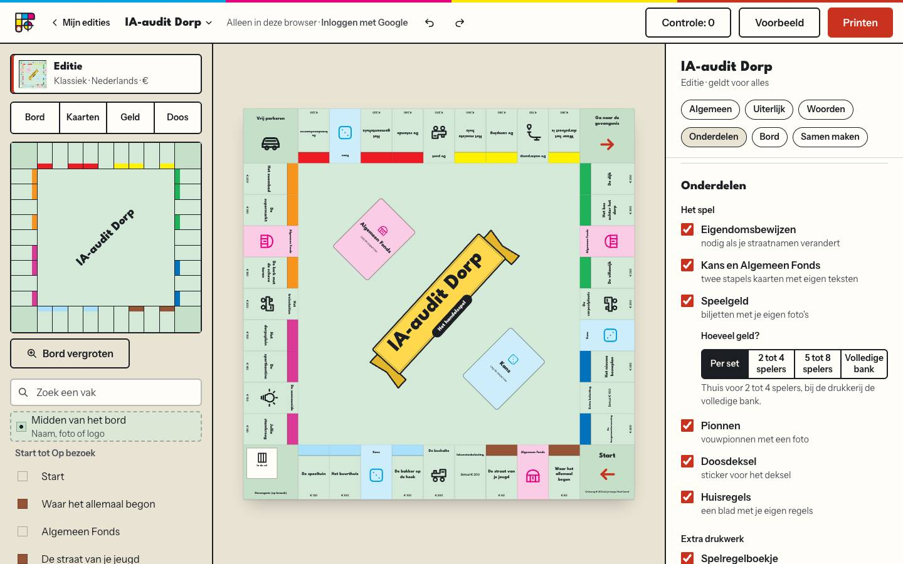

IA-audit Dorp
Editie · geldt voor alles
AlgemeenOnderdelenUiterlijkWoordenBordmaatSamen maken
Algemeen
IA-audit Dorp
Een datum of ondertitel zet je hieronder.
14 mei 2027
Onderdelen 5 van 10
Het spel
✓Bordaltijd in de set
✓Eigendomsbewijzennodig als je straatnamen verandert
✓Kans en Algemeen Fondstwee stapels kaarten met eigen teksten
✓Speelgeldbiljetten met je eigen foto's
Hoeveel geld?
Aanbevolen2 tot 45 tot 8Volledige bank
Aanbevolen: thuis 2 tot 4 spelers, bij de drukkerij de volledige bank.
Pionnennaam en foto per speler
✓Doosdekseltitel en foto op de doos
Uiterlijk
Thema, accent, kleur per straatgroep